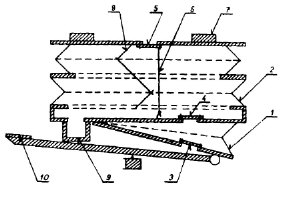
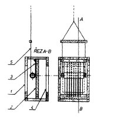
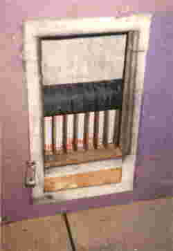
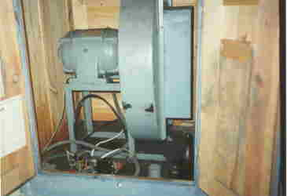

Plícemi varhan je mìch
– zásobník vzduchu o stabilním tlaku. Konstrukce mìchu je složena ze døeva
(rámy harmoniky), kùže (panty v hranách harmoniky) a papírového tìsnícího
polepu. |

Øez mìchem: 1- klínový èerpací mìch, 2- zásobníkový mìch, 3- sací ventil, 4- propouštìcí ventil, 5- pojistný ventil, 6-šòùra pojistného ventilu,7- zátìž, 8- kovové vodící nùžky, 9-pøívod od ventilátoru, 10- šlapka pro kalkanta Na fotografiích je detail kovových vodících nùžek na boku mìchu (stabilizátor, který dovoluje horní desce harmoniky pohyb jen ve svislém smìru) a pohled dovnitø nataženého rozebraného mìchu (je vidìt šòùru pojistky ve støední èásti). Z mìchu jsou odstranìna víka se zátìží (200kg cihel). |
Regulaèní záklopka.Vzduch je do mìchu dodáván elektrickým ventilátorem. V okamžiku, kdy se na varhany nehraje nebo se hraje jen s menším poètem rejstøíkù, je spotøeba vzduchu menší a ventilátor by bìhem okamžiku mìch pøeplnil. Vzduch by pak musel unikat pøes pojistný ventil na víku mìchu. Aby k tomuto jevu nedocházelo, je na pøívodu vzduchu od ventilátoru regulaèní záklopka, která pøiškrcuje pøívod v závislosti na poloze horní desky mìchu. |

Regulaèní záklopka: 1- pøívod vzduchu od ventilátoru, 2- rám s møížkou, 3- plátno s váleèkem (roletka), 4- výstup vzduchu do mìchu, 5- šòùra spojující regulátor s vrchní deskou mìchu Na fotografiích je pohled na regulaèní klapku ve smìru pøívodu vzduchu od ventilátoru a vlastní ventilátor (stav pøed opravou). |
|
 |
[obsah, skøíò a hrací stùl, vzdušnice, mìch a regulátor, traktura, uspoøádání a údržba]

 (na
obsah)
(na
obsah)  (zpìt,
dále)
(zpìt,
dále)